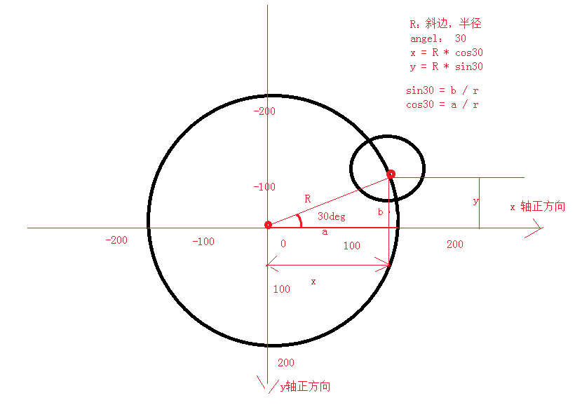

1.body css设置
2.绘制背景层里面的圆 bg_inner_circle
抽取圆心, 半径
3.绘制背景层外面的圆
4.中间圆抽成对象 TextCircle.js
5.绘制中心的文字圆
6.创建动画层
7.创建内组
8.绘制内外层上的圆
+ 内层 : iOS Html5 UI
+ 外层: android c++ java
//渲染动画层 (注意: render 后面一定要draw )
9.实现旋转动画, 执行动画
查看函数参数 Konva.Animation()
10.让内组所有元素自转
11.鼠标移动特殊处理
var anim = new Konva.Animation(function(frame) {
//动画系统提供的frame有三个属性可以使用：
var time = frame.time, // 动画执行的总时间
timeDiff = frame.timeDiff, // 距离上一帧的时间
frameRate = frame.frameRate; // 帧率（既1000/间隔时间）
//动画的动作
}, layer);
anim.start();//启动动画
//anim.stop();//结束动画
//总体思路，使用tween 配合onFinish事件中重新播放动画，达到循环播放的效果
var loopTween = new Konva.Tween({
node: star, //设置要表现动画的 Konva对象
rotation: 360, //旋转360度
duration: 2, //动画持续时间
easing: Konva.Easings.Linear,
onFinish: function() {
// this === loopTween //true
this.reset();//重置动画
this.play(); //重新播放动画
}
});
loopTween.play();
rect.to({
duration: 2,
scale: 1.5,
yoyo: true// 此设置也可以用于 tween
});

var group = new Konva.Group({
x: 0,
y: 0
});
group.add(rect);
var rect = new Konva.Rect({
x: 100,
y: 100,
fill: 'red',
width: 200,
height: 200
});
//绑定事件 Konva支持事件：mouseover, mouseout, mouseenter, mouseleave, mousemove, mousedown, mouseup, mousewheel, click, dblclick, dragstart, dragmove, and dragend
rect.on('click', function(){ //jQuery一模一样！！
console.log('^_^ ^_^');
});
//绑定多个事件
rect.on('click mousemove',function(e){
});
//解除绑定事件
rect.off('click'); //这不是jQuery吗？
//触发事件
rect.fire('click');
//取消事件冒泡
rect.on('click', function(evt) {
alert('You clicked the circle!');
evt.cancelBubble = true; //取消事件冒泡
});
//组中查找圆形的Konva对象
groupCircle.find('Circle').each(function( circle, index ){
circle.setZIndex( 3 - index );
});